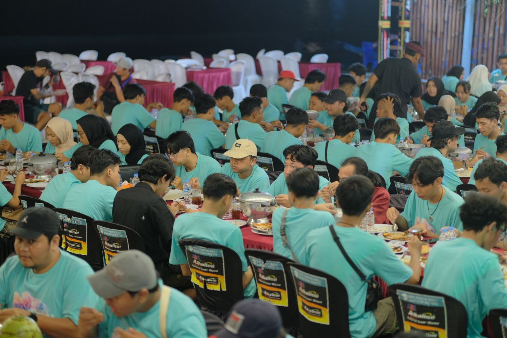

Kegiatan makan malam di kafe tepi pantai Jimbaran merupakan bagian dari rangkaian Kuliah Kerja Lapangan (KKL) yang memberikan pengalaman kuliner khas Bali dengan suasana pantai yang menenangkan. Jimbaran dikenal dengan deretan kafe dan restoran seafood yang menyajikan hidangan segar langsung dari hasil tangkapan nelayan setempat. Suasana senja di tepi pantai yang indah membuat momen makan malam terasa romantis dan berkesan.
Selama kegiatan makan malam di Jimbaran, peserta KKL dapat menikmati berbagai aktivitas menarik, seperti:
• Menyantap hidangan seafood bakar dengan bumbu khas Bali.
• Menyaksikan pemandangan matahari terbenam di tepi pantai.
• Mendengarkan alunan musik akustik dari para musisi lokal.
• Berfoto bersama di tepi pantai sebagai dokumentasi kegiatan KKL.
Kafe tepi pantai Jimbaran memiliki berbagai keunggulan yang menjadikannya destinasi kuliner unggulan di Bali:
Seafood Segar: Menggunakan bahan hasil laut terbaik yang dimasak langsung saat dipesan.
Pemandangan Sunset: Menawarkan panorama matahari terbenam yang memukau.
Suasana Romantis: Cocok untuk makan malam bersama rombongan KKL atau acara spesial.
Nilai Edukatif: Memberikan wawasan tentang industri kuliner dan pariwisata pesisir Bali.